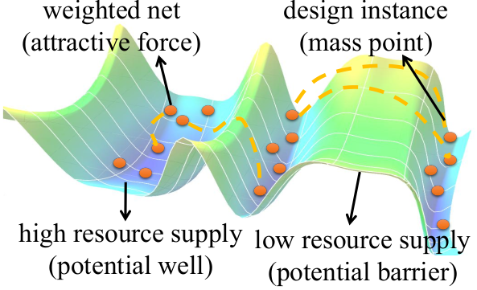
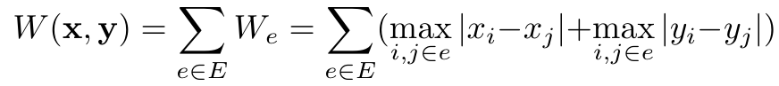
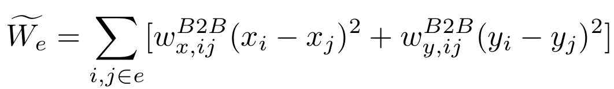
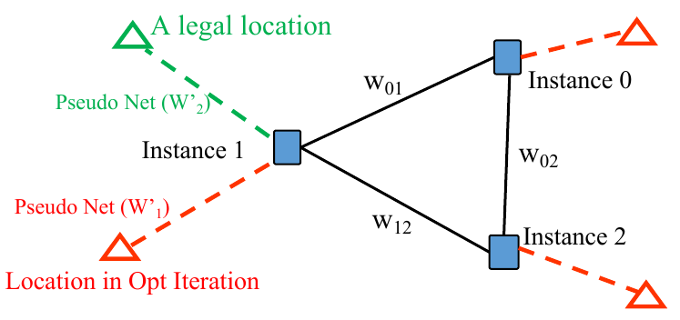

Wirelength Optimzation in Quadratic Placement Flow
Here, we explain the necessity and mechanisms of our SA-based initial placement and the consideration of the factors and terms in our quadratic placement problems.
SA-Based Initial Placement
For source code details, please check the class: ClusterPlacer .
In most of the previous FPGA analytical placers, the initial placement is generated randomly, since it is claimed that the analytical placers are usually insensitive to the initial placement. However, most of them are evaluated on randomly generated FPGA netlists or small designs. According to our observation, the global placement result is sensitive to the initial placement, especially for the designs with clearly hierarchy, e.g. SoC/NoC/spatial accelerators.
On FPGA, the resources are separated into discrete regions and the resource supply for each type of resource is not even on the overall device as an example shown in the figure below. The resource supply for a specific type of resource can be regarded as a surface of potential energy. Each design instance can be regarded as a mass point. The interconnection nets between the instances can be considered as attractive forces. In the analytical models for these scenarios, the existences of local energy minima are obvious and this is a common limitation of analytical solutions. Therefore, to overcome the limitation of existing analytical solutions, we proposed SA-based cluster-level initial placement before global placement iterations.

- Parallel partitionging: AMF-Placer first recursively bi-partitions the input netlist into clusters. Since the partitioning procedures of the separated clusters are independent, they can be assigned to different threads to speed up the overall partitioning procedure. Moreover, we also set resource constraints, e.g., the number of DSPs, for the clusters to ensure each of them will not lead to serious resource overflow after initial placement. Meanwhile, we adopt the clock-aware partitioning criteria to generate a clock-friendly initial placement by pre-clustering some cells in medium-size clock domains.
- Parallel SA placement: After partitioning, the FPGA device will be evenly divided into a 2-D grid of bins. Simulated-annealing (SA) algorithm is used to lower the cost function by randomly assigning the clusters to the bins and swapping them. Assuming all the instances in a cluster will be placed at the center of the bin where the cluster is assigned, the goal of SA-based placer will lower the cost function, consisting of the terms for wirelength and instance density. With random factors, instances can realize movement in a wide range and the limitations of resource supply constraints, which might trap instances in local optima, can be overcome. Furthermore, to enlarge the search space of the algorithm, the SA procedure will run multiple times with different random start points. These SA procedures with different start points can be parallelized as well. Please note that each start point placement is generated with a cluster randomly selected and assigned to a random bin and greedy incremental placement of the other clusters.
We believe that this initial placement flow can be replaced by the other comprehensive floorplanning flow but we found that this SA-based initial placement was good enough for our large applications and Ultrascale device so we just keep it simple.
Quadratic Placement
For source code details, please check the class: WirelengthOptimizer .
Analytical placers approximate the wirelength (or HPWL) and some other metrics in numerical models for efficient solutions and the HPWL function is shown below, where E is the set of nets in the design and i/j are the pin indexes:
 In this project, like what many previous analytical placers did, to approximate the underivable HPWL of a net connected to multiple pins, AMF-Placer will try to minimize the weighted quadratic objective function as below:
 Generally, for QP placer, the weights in the formula are determined by Bound2Bound net model according to the Manhattan distance between the nodes and the fanin/fanout of the net. The higher weight a net gains, the closer the related pins will be placed after wirelength optimization.
In the formula, we have to consider the following factors for later packing, legalization, timing and design characteristics.
- Cell Density: the intrinsic QP problem will try to pull the elements close to each other to minimize the HPWL but this will lead to the violation of cell density constraints. Therefore, general quadratic placers will add pseudo nets between elements and some "pseudo anchors" on the device. Usually, such "pseudo anchor" is the location of the element in last quadratic placement iteration. By gradully increasing the "strength" of the "pseudo nets", the elements will tend to be fixed at the specific locations. In previous solutions, the "strength" of these pseudo nets is determined by a global factor and the location change of the elements in last placement iteration. However, considering macros, a wide range of movements of instances connecting to many nets will lead to serious distortion of the wirelength estimation and cell density control. This will make the placement convergence procedure highly unstable when there are a large number of macros in the design. Therefore, AMF-Placer adds an extra multiplier factor for each pseudo net, which is the number of external pins for the corresponding instance. In another word, the more nets an element is connected to, the slower the element should move during wirelength optimization.
- Macro Legalization: since available sites for the legalization of large macros without overlap are sparse on FPGA, simply considering wirelength minimization without legalization objective during quadratic program will worsen the wirelength after final legalization. To facilitate macro legalization in mixed-size placement, AMF-Placer inserts additional pseudo nets interconnecting instances with their several potential legal locations. The way to find these locations and the reason why the additional pseudo nets help are explained when we discuss about the macro legalization problem.
- Timing Optimization: Simply targeting at minimizing wirelength withou considering timing can lead to terrible timing result after routing. Therefore, AMF-Placer adds additional weights to the nets connecting elements in the long datapath. The information of long dataths is obtained by simple graph-based static timing analysis.
- Design Features: AMF-Placer also allow users to indicate some module clusters in the design and AMF-Placer will intend to enhance the nets between the elements in those clusters during wirelength optimization.
An example of pseudo nets and anchors, where the dash lines indicate pseudo nets and the triangles represent anchors, is shown below:
 The wirelength problem is resolved by Eigen3 in a parallel way.
References:
[1] Chak-Wa Pui et al., "RippleFPGA: A routability-driven placement for large-scale heterogeneous FPGAs," 2016 IEEE/ACM International Conference on Computer-Aided Design (ICCAD), 2016, pp. 1-8, doi: 10.1145/2966986.2980084.
 1.9.4
1.9.4